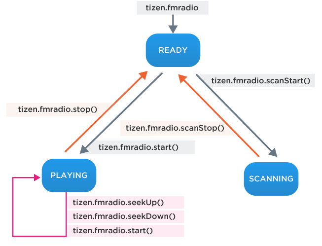

FMRadio API
The following functionality is provided:
- Start and stop radio
- Seek radio frequency
FM Radio works according the following state table:

tizen.fmradio.seekUp() and tizen.fmradio.seekDown() work when the radio is in playing state. InvalidStateError is thrown when they are called in other states.
For more information about how to use FMRadio API, see Radio Guide.
Since: 2.3
Table of Contents
- 1. Type Definitions
- 1.1. RadioState
- 2. Interfaces
- 2.1. FMRadioObject
- 2.2. FMRadioManager
- 2.3. FMRadioScanCallback
- 2.4. FMRadioInterruptCallback
- 2.5. AntennaChangeCallback
- 3. Related Feature
- 4. Full WebIDL
Summary of Interfaces and Methods
| Interface | Method |
|---|---|
| FMRadioObject | |
| FMRadioManager | void start (optional double? frequency) void stop () void seekUp (optional SuccessCallback? successCallback, optional ErrorCallback? errorCallback) void seekDown (optional SuccessCallback? successCallback, optional ErrorCallback? errorCallback) void scanStart (FMRadioScanCallback radioScanCallback, optional ErrorCallback? errorCallback) void scanStop (optional SuccessCallback? successCallback, optional ErrorCallback? errorCallback) void setFMRadioInterruptedListener (FMRadioInterruptCallback interruptCallback) void unsetFMRadioInterruptedListener () void setAntennaChangeListener (AntennaChangeCallback changeCallback) void unsetAntennaChangeListener () |
| FMRadioScanCallback | void onfrequencyfound (double frequency) void onfinished (double[] frequencies) |
| FMRadioInterruptCallback | void oninterrupted (DOMString reason) void oninterruptfinished () |
| AntennaChangeCallback | void onchanged (boolean isAntennaConnected) |
1. Type Definitions
1.1. RadioState
enum RadioState { "PLAYING", "SCANNING", "READY"};
Since: 2.3
The states defined by this enumerator are:
- READY - Indicates that the radio is ready to play or scan
- PLAYING - Indicates that the radio is playing
- SCANNING - Indicates that the radio is scanning radio channels in the range from tizen.fmradio.frequencyLowerBound to tizen.fmradio.frequencyUpperBound
2. Interfaces
2.1. FMRadioObject
[NoInterfaceObject] interface FMRadioObject {
readonly attribute FMRadioManager fmradio;
};
Tizen implements FMRadioObject;
Since: 2.3
The tizen.fmradio object provides access to the functionality of the FM Radio API.
2.2. FMRadioManager
[NoInterfaceObject] interface FMRadioManager {
readonly attribute double frequency;
readonly attribute double frequencyUpperBound;
readonly attribute double frequencyLowerBound;
readonly attribute long signalStrength;
readonly attribute RadioState state;
readonly attribute boolean isAntennaConnected;
attribute boolean mute;
void start(optional double? frequency) raises(WebAPIException);
void stop() raises(WebAPIException);
void seekUp(optional SuccessCallback? successCallback, optional ErrorCallback? errorCallback) raises(WebAPIException);
void seekDown(optional SuccessCallback? successCallback, optional ErrorCallback? errorCallback) raises(WebAPIException);
void scanStart(FMRadioScanCallback radioScanCallback, optional ErrorCallback? errorCallback) raises(WebAPIException);
void scanStop(optional SuccessCallback? successCallback, optional ErrorCallback? errorCallback) raises(WebAPIException);
void setFMRadioInterruptedListener (FMRadioInterruptCallback interruptCallback) raises(WebAPIException);
void unsetFMRadioInterruptedListener() raises(WebAPIException);
void setAntennaChangeListener(AntennaChangeCallback changeCallback) raises(WebAPIException);
void unsetAntennaChangeListener() raises(WebAPIException);
};
Attributes
-
readonly
double frequencyCurrent frequency(MHz) of the radio.
Since: 2.3
-
readonly
double frequencyUpperBoundMaximum frequency(MHz) available on the radio device.
Since: 2.3
-
readonly
double frequencyLowerBoundMinimum frequency(MHz) available on the radio device.
Since: 2.3
-
readonly
long signalStrengthStrength of the radio signal ranging between -128 and 127 (dBm).
Since: 2.3
-
readonly
RadioState stateState of the radio.
Since: 2.3
-
readonly
boolean isAntennaConnectedIndicates if the FM Radio antenna is connected.
If the system detects that the radio antenna is disconnected then the isAntennaConnected is false.
For example, an earphone cable is commonly used as a FM antenna in mobile phones. In that case, the isAntennaConnected attribute can be used to check if the FM antenna is connected or not.
Since: 2.3
Code example:
if (!tizen.fmradio.isAntennaConnected) { console.log("Please plug in the earphones to listen to the radio"); } -
boolean muteMute state of the radio. If the value is true, there is no sound from the radio (muted). If the values is false, sound is playing. The default value is false.
Since: 2.3
Methods
-
start -
Starts playing the radio. This method is available in the READY or PLAYING state. After start(), the radio state is PLAYING.
void start(optional double? frequency);Since: 2.3
This method allows the user to set the radio frequency between frequencyUpperBound and frequencyLowerBound. If the user calls this method without any frequency value, frequencyLowerBound is set.
Parameters:
- frequency [optional] [nullable]: Frequency(MHz) of FM radio waves to set
Exceptions:
- WebAPIException
with error type ServiceNotAvailableError, if the radio hardware is not available because another application is using it.
with error type TypeMismatchError, if any input parameter is not of the expected type for that parameter.
with error type InvalidValuesError, if the frequency is out of bounds.
with error type InvalidStateError, if the radio state is not READY or PLAYING.
with error type UnknownError, if any other error occurs.
Code example:
var radioState = tizen.fmradio.state; if (radioState == "READY") { tizen.fmradio.start(87.5); } /* Jump to your favorite radio station (95.9MHz) and start playing */ /* tizen.fmradio.start(95.9); */ -
stop -
Stops playing the radio. This method is only available in the PLAYING state. After the radio stops, the state is READY.
void stop();Since: 2.3
Exceptions:
- WebAPIException
with error type InvalidStateError, if the radio state is not PLAYING
with error type UnknownError, if the radio cannot be stopped because of a platform error.
Code example:
var radioState = tizen.fmradio.state; if (radioState == "PLAYING") { tizen.fmradio.stop(); } - WebAPIException
-
seekUp -
Finds a radio channel at a higher frequency than the current one while the radio is playing, asynchronously.
void seekUp(optional SuccessCallback? successCallback, optional ErrorCallback? errorCallback);
Since: 2.3
This method is only available in the PLAYING state. There is no change of state.
When the next valid frequency is successfully found, successCallback is invoked. After the search, the radio begins playing the new channel automatically.
If the highest frequency(frequencyUpperBound) has been reached, it finds the lowest frequency(frequencyLowerBound) channel.The ErrorCallback is launched with these error types:
- InvalidStateError - This error occurs when the radio state is not PLAYING
- UnknownError - If any other error occurs
Remark : It is not allowed to call a seek method in quick succession (e.g. calling seekUp() or seekDown() twice in one second). If a user call seekUp() while the radio is seeking, the errorCallback will be invoked.
Parameters:
- successCallback [optional] [nullable]: Callback method to be invoked when the radio successfully finds a radio channel
- errorCallback [optional] [nullable]: Callback method to be invoked when an error occurs
Exceptions:
- WebAPIException
with error type TypeMismatchError, if any input parameter is not of the expected type for that parameter.
Code example:
var radioState = tizen.fmradio.state; function successCallback() { console.log("The radio find a new frequency successfully"); } function errorCallback(err) { console.log("The following error occurred: " + err.name); } if (radioState == "PLAYING") { tizen.fmradio.seekUp(successCallback, errorCallback); } -
seekDown -
Finds a radio channel at a lower frequency than the current one while the radio is playing, asynchronously.
void seekDown(optional SuccessCallback? successCallback, optional ErrorCallback? errorCallback);
Since: 2.3
This method is only available in the PLAYING state. There is no change of state.
When the next valid frequency is successfully found, successCallback is invoked. After the search, the radio begins playing the new channel automatically.
If the lowest frequency(frequencyLowerBound) has been reached, it finds the highest frequency(frequencyUpperBound) channel.The ErrorCallback is launched with these error types:
- InvalidStateError - This error occurs when the radio state is not PLAYING
- UnknownError - If any other error occurs
Remark : It is not allowed to call a seek method in quick succession (e.g. calling seekUp() or seekDown() twice in one second). If a user call seekDown() while the radio is seeking, the errorCallback will be invoked.
Parameters:
- successCallback [optional] [nullable]: Callback method to be invoked when the radio successfully finds a radio channel
- errorCallback [optional] [nullable]: Callback method to be invoked when an error occurs
Exceptions:
- WebAPIException
with error type TypeMismatchError, if any input parameter is not of the expected type for that parameter.
Code example:
var radioState = tizen.fmradio.state; function successCallback() { console.log("The radio find a new frequency successfully"); } function errorCallback(err) { console.log("The following error occurred: " + err.name); } if (radioState == "PLAYING") { tizen.fmradio.seekDown(successCallback, errorCallback); } -
scanStart -
Starts scanning all radio channels, asynchronously.
void scanStart(FMRadioScanCallback radioScanCallback, optional ErrorCallback? errorCallback);
Since: 2.3
This method is only available in the READY state. While the radio is scanning the channels, the radio state is SCANNING. After the scanning is completed, the radio state is changed to READY.
It scans all available channels from frequencyLowerBound to frequencyUpperBound. Once the scan has started, it is not possible to call start(), seekUp(), or seekDown() until the scan completes.
The scan can be cancelled any time, by calling scanStop(). The radio frequency will not be changed by the scan.The following methods are invoked depending on the progress of this process :
- onfrequencyfound() - This method is invoked with the frequency value when a new frequency is found while scanning radio channels
- onfinished() - This method is invoked with the array of frequencies found when the scan is completed
The ErrorCallback is launched with these error types:
- InvalidStateError - This error occurs when the radio state is not READY
- UnknownError - If any other error occurs
Parameters:
- radioScanCallback: Callback method to be invoked when a radio channel is found
- errorCallback [optional] [nullable]: Callback method to be invoked when an error occurs
Exceptions:
- WebAPIException
with error type TypeMismatchError, if any input parameter is not of the expected type for that parameter.
Code example:
var radioState = tizen.fmradio.state; var radioScanCallback = { onfrequencyfound: function(frequency) { console.log("A new frequency found: " + frequency); }, onfinished: function(frequencies) { console.log(frequencies.length + "frequencies found!"); for (var i = 0; i < frequencies.length; i++) { console.log(i + ": " + frequencies[i]); } } }; function errorCallback(err) { console.log("The following error occurred: " + err.name); } if (radioState == "READY") { tizen.fmradio.scanStart(radioScanCallback, errorCallback); } -
scanStop -
Stops scanning radio channels, asynchronously. This method is only available in the SCANNING state. After the scan stops, the radio state is READY.
void scanStop(optional SuccessCallback? successCallback, optional ErrorCallback? errorCallback);
Since: 2.3
This method can be used in the middle of scanning. After the scan has stopped, the radio restores the frequency played before the scan.
The ErrorCallback is launched with these error types:
- InvalidStateError - This error occurs when the radio state is not SCANNING
- UnknownError - If any other error occurs
Parameters:
- successCallback [optional] [nullable]: Callback method to be invoked when scanning radio channels stops successfully
- errorCallback [optional] [nullable]: Callback method to be invoked when an error occurs
Exceptions:
- WebAPIException
with error type TypeMismatchError, if any input parameter is not of the expected type for that parameter.
Code example:
var radioState = tizen.fmradio.state; function successCallback() { console.log("The scanning stops"); } function errorCallback(err) { console.log("The following error occurred: " + err.name); } if (radioState == "SCANNING") { tizen.fmradio.scanStop(successCallback, errorCallback); } -
setFMRadioInterruptedListener -
Sets a listener to receive a notification when the radio is interrupted.
void setFMRadioInterruptedListener(FMRadioInterruptCallback interruptCallback);
Since: 2.3
This method sets a FMRadioInterruptCallback type callback that is triggered when the radio is interrupted. The callback lasts until the unsetFMRadioInterruptedListener() method is called.
Remark : When an audio interrupt occurs, the radio loses an audio focus and stops. Interrupts may occur for an incoming call, launching another audio player, or another player which also uses audio. To resume playing the radio, user interaction with the device is required. This is to avoid the occurrence of a race condition among applications that try to play without user interaction.
Parameters:
- interruptCallback: Callback method to be invoked when the radio is interrupted
Exceptions:
- WebAPIException
with error type TypeMismatchError, if any input parameter is not of the expected type for that parameter.
with error type UnknownError, if any other error occurs.
Code example:
var interruptCallback = { oninterrupted: function(reason) { console.log(reason); }, oninterruptfinished: function() { console.log("The radio interruption finished."); } }; tizen.fmradio.setFMRadioInterruptedListener(interruptCallback); -
unsetFMRadioInterruptedListener -
Unsets the listener to stop receiving a notification when the radio is interrupted.
void unsetFMRadioInterruptedListener();Since: 2.3
Exceptions:
- WebAPIException
with error type UnknownError, if the method cannot be completed because of a platform error.
Code example:
tizen.fmradio.unsetFMRadioInterruptListener();
- WebAPIException
-
setAntennaChangeListener -
Sets the listener which is called when the status of antenna has been changed.
void setAntennaChangeListener(AntennaChangeCallback changeCallback);
Since: 2.3
Parameters:
- changeCallback
Exceptions:
- WebAPIException
with error type TypeMismatchError, if any input parameter is not of the expected type for that parameter.
with error type UnknownError, if the method cannot be completed because of a platform error.
Code example:
function antennaCallback(isAntennaConnected) { alert("Antenna status has been changed. It is now " + (isAntennaConnected ? "connected" : "disconnected")); } tizen.fmradio.setAntennaChangeListener(antennaCallback); -
unsetAntennaChangeListener -
Unsets the listener set with the setAntennaChangeListener() method.
void unsetAntennaChangeListener();Since: 2.3
Exceptions:
- WebAPIException
with error type UnknownError, if the method cannot be completed because of a platform error.
Code example:
/* When you don't want to detect a change in the antenna status */ tizen.fmradio.unsetAntennaChangeListener();
- WebAPIException
2.3. FMRadioScanCallback
[Callback=FunctionOnly, NoInterfaceObject] interface FMRadioScanCallback {
void onfrequencyfound(double frequency);
void onfinished(double[] frequencies);
};
Since: 2.3
Methods
-
onfrequencyfound -
Called when a new radio channel is discovered in the process of scanning.
void onfrequencyfound(double frequency);Since: 2.3
Parameters:
- frequency: Channel frequency found during the scan
-
onfinished -
Called when the scan is complete.
void onfinished(double[] frequencies);Since: 2.3
Parameters:
- frequencies: Array of channel frequencies found during the scan
2.4. FMRadioInterruptCallback
[Callback, NoInterfaceObject] interface FMRadioInterruptCallback {
void oninterrupted(DOMString reason);
void oninterruptfinished();
};
Since: 2.3
Methods
-
oninterrupted -
Called when the FM radio is interrupted.
void oninterrupted(DOMString reason);Since: 2.3
Parameters:
- reason: Reason why FM radio is interrupted (e.g. interrupted by an incoming call, alarm, notifications)
-
oninterruptfinished -
Called when the cause of the interrupt ends.
void oninterruptfinished();Since: 2.3
Note that after it is invoked, you can turn on FM radio by invoking tizen.fmradio.start().
2.5. AntennaChangeCallback
[Callback=FunctionOnly, NoInterfaceObject] interface AntennaChangeCallback {
void onchanged(boolean isAntennaConnected);
};
Since: 2.3
Methods
-
onchanged -
Called when the antenna is connected or disconnected which causes value of isAntennaConnected attribute to change.
void onchanged(boolean isAntennaConnected);Since: 2.3
Parameters:
- isAntennaConnected: New value of the isAntennaConnected attribute
3. Related Feature
To guarantee that the FM radio application runs on a device with FM radio, declare the following feature requirements in the config file:
4. Full WebIDL
module FMRadio {
enum RadioState { "PLAYING", "SCANNING", "READY"};
[NoInterfaceObject] interface FMRadioObject {
readonly attribute FMRadioManager fmradio;
};
Tizen implements FMRadioObject;
[NoInterfaceObject] interface FMRadioManager {
readonly attribute double frequency;
readonly attribute double frequencyUpperBound;
readonly attribute double frequencyLowerBound;
readonly attribute long signalStrength;
readonly attribute RadioState state;
readonly attribute boolean isAntennaConnected;
attribute boolean mute;
void start(optional double? frequency) raises(WebAPIException);
void stop() raises(WebAPIException);
void seekUp(optional SuccessCallback? successCallback, optional ErrorCallback? errorCallback) raises(WebAPIException);
void seekDown(optional SuccessCallback? successCallback, optional ErrorCallback? errorCallback) raises(WebAPIException);
void scanStart(FMRadioScanCallback radioScanCallback, optional ErrorCallback? errorCallback) raises(WebAPIException);
void scanStop(optional SuccessCallback? successCallback, optional ErrorCallback? errorCallback) raises(WebAPIException);
void setFMRadioInterruptedListener (FMRadioInterruptCallback interruptCallback) raises(WebAPIException);
void unsetFMRadioInterruptedListener() raises(WebAPIException);
void setAntennaChangeListener(AntennaChangeCallback changeCallback) raises(WebAPIException);
void unsetAntennaChangeListener() raises(WebAPIException);
};
[Callback=FunctionOnly, NoInterfaceObject] interface FMRadioScanCallback {
void onfrequencyfound(double frequency);
void onfinished(double[] frequencies);
};
[Callback, NoInterfaceObject] interface FMRadioInterruptCallback {
void oninterrupted(DOMString reason);
void oninterruptfinished();
};
[Callback=FunctionOnly, NoInterfaceObject] interface AntennaChangeCallback {
void onchanged(boolean isAntennaConnected);
};
};